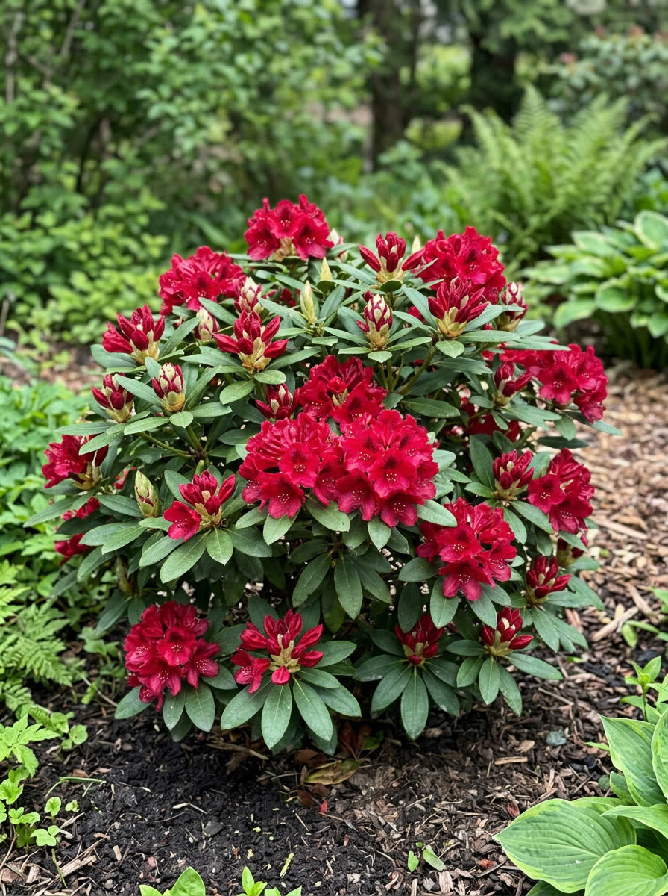
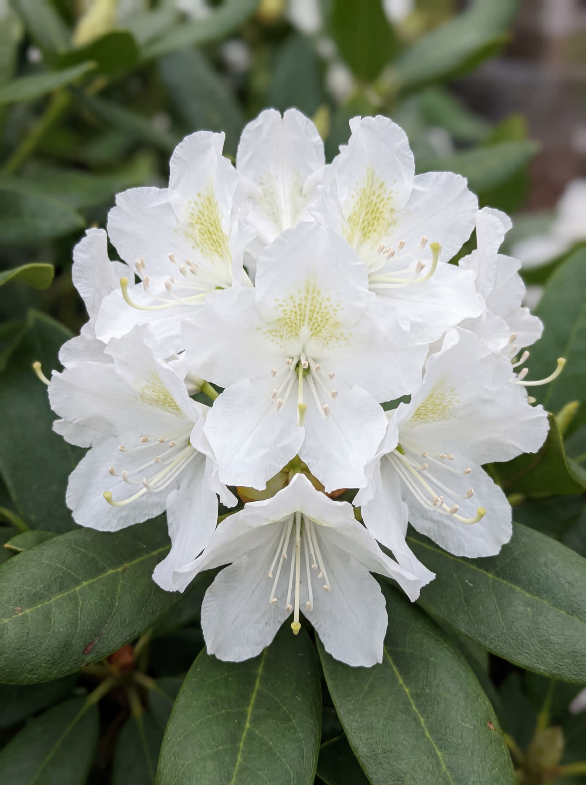
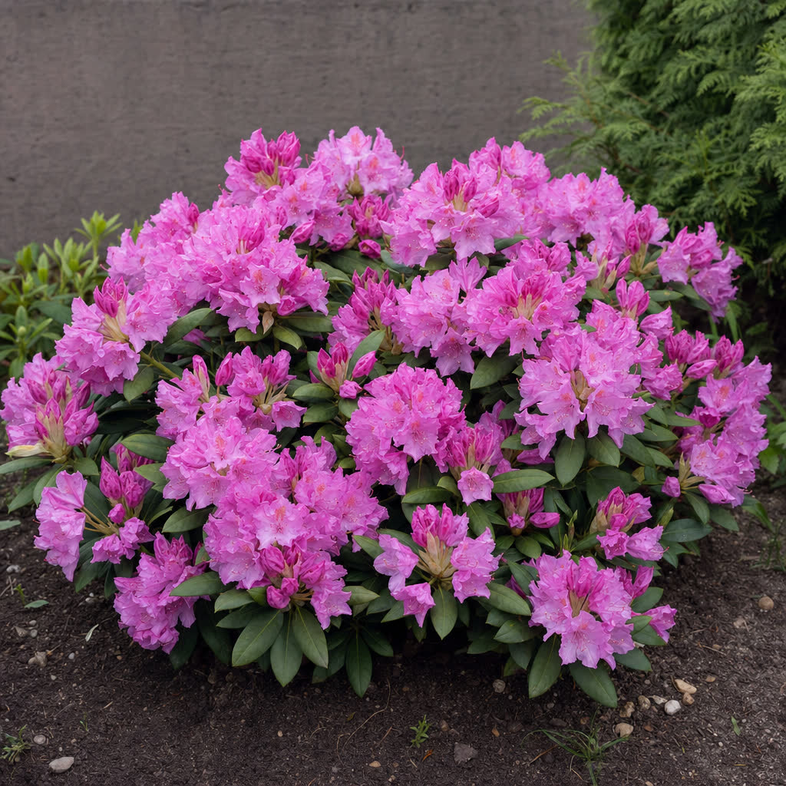
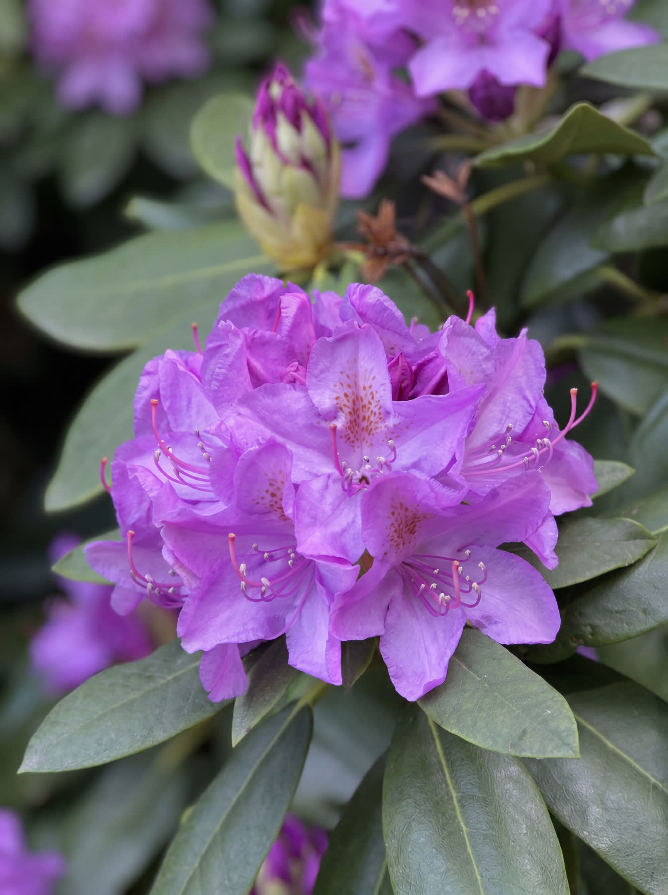
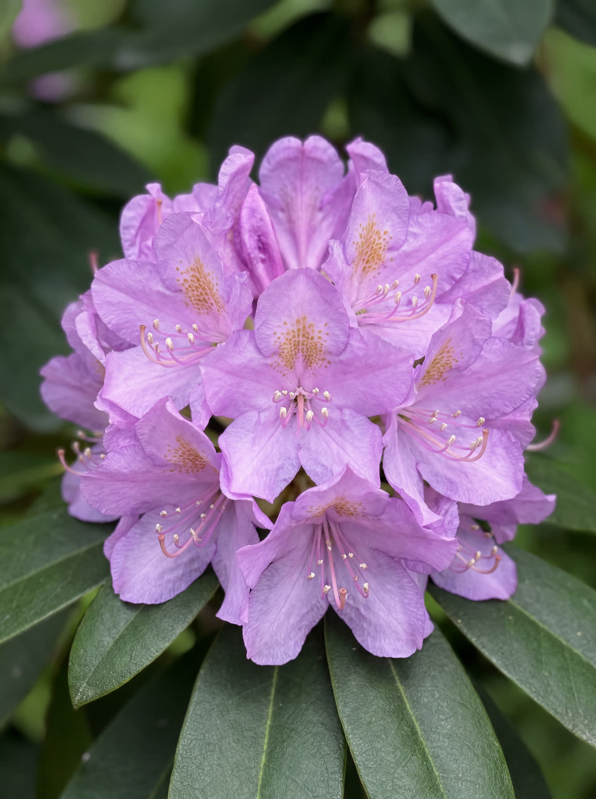
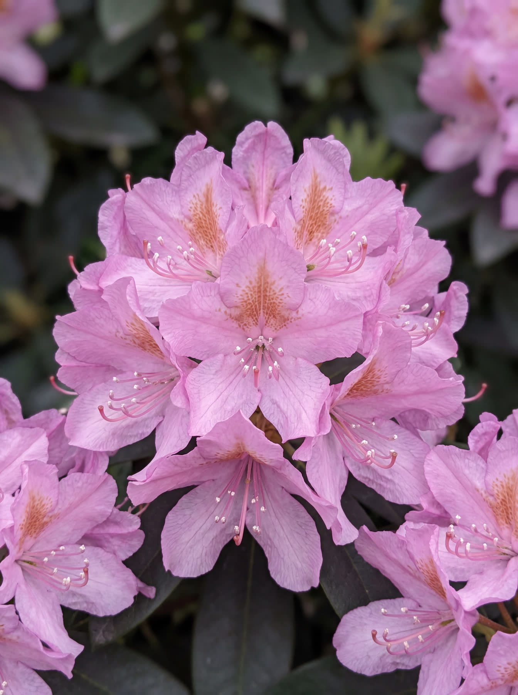
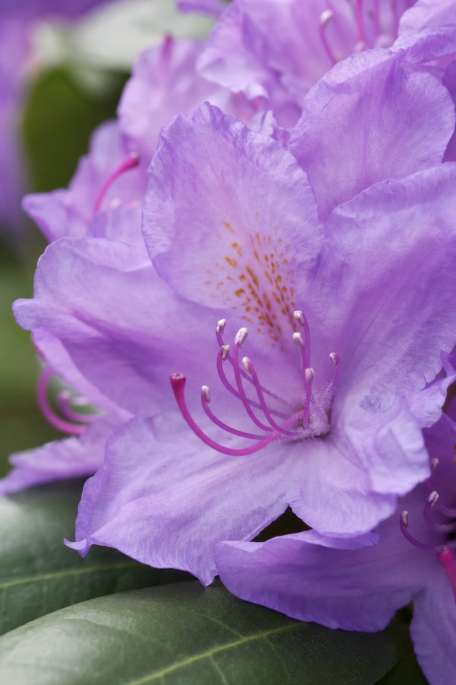

Otterlo, mei.
Een jaar op de kwekerij, verteld in zes hoofdstukken. Over veenrijke grond, een sterk wortelstelsel, zeven soorten en het moment dat het veld in Otterlo kleurt.

Het begint onder de grond.

Rhododendrons vragen zure, luchtige grond. De Veluwe geeft die vanzelf: ons veld in Otterlo ligt op veenrijke bodem, precies wat de plant nodig heeft. Daarom kweken wij hier, en nergens anders.
Dankzij die bodem en een uitgebalanceerde watergift ontwikkelen onze planten een sterk wortelstelsel. Daardoor passen ze zich moeiteloos aan in uw tuin. Met aangroeigarantie.
- BodemVeenrijk, zuur (pH 4,5 – 6)
- Voorraad10.000 planten op stam
- Maten40 – 60 cm tot 120 cm en meer
- RooienVers, op de dag van levering of afhaal
- GarantieAangroeigarantie op elke plant
Wij kweken rhododendrons. Niet meer, niet minder.

„Een gezonde plant is geen toeval. Dat is onze standaard.”
Gert Top, Otterlo
Familiebedrijf in Otterlo, op de Veluwe, sinds 2001. Tienduizend planten op voorraad, direct van het veld naar uw tuin. U spreekt rechtstreeks met de kweker: één aanspreekpunt, van advies tot levering.
- Belofte 1Aangroeigarantie
Niet aangeslagen in het eerste seizoen? Wij vervangen kosteloos.
- Belofte 2Vers gerooid
Uw planten staan niet te wachten. We rooien ze voor uw bezorging of afhaal.
- Belofte 3Eigen transport
Door heel Nederland, op een datum die u uitkomt.
- Belofte 4Persoonlijk advies
Over soort, maat en standplaats. Rechtstreeks van de kweker.
Zeven soorten, van helderrood tot violet.







Prijs per plant in maat 40–60 cm. Alle soorten winterhard en groenblijvend. Geen minimumbestelling voor particulieren.
Alle maten en prijzenHet jaar van een rhododendron.
- Mrt – aprPlanten, voorjaar
Het ideale moment. Zure, luchtige grond; voeg tuinturf-substraat toe voor de beste start.
- Apr – junBloei
Cunningham's White opent als eerste, in april. De andere zes volgen in mei en juni.
- Mei – junSnoeien, als u wilt
Niet noodzakelijk. Zo ja: direct na de bloei, van eind april tot half juni. Radicaal snoeien raden wij af.
- Sep – oktPlanten, najaar
Tweede ideale moment. Buiten vorstperiodes kan aanplanten overigens het hele jaar.
Plant u in de zomer, geef dan voldoende water in de eerste weken. Twijfelt u over standplaats of soort? Bel ons; wij adviseren graag.

Zuurminnend, vochtregelend, rijk aan voedingsstoffen. Speciaal voor rhododendrons.
Voor hoveniers, gemeenten en projecten.
Tienduizend planten op stam. Partijprijzen vanaf 25 stuks, aangroeigarantie op elke plant, geleverd met eigen transport op de afgesproken dag.
Wij rooien op uw leverdatum, niet eerder. Dat voorkomt droogtestress en zorgt voor maximale aanslagkans. Plantservice op locatie is optioneel, inclusief grondverbetering met tuinturf-substraat.
Factuur op 30 dagen, btw verlegd voor zakelijke afnemers. Aangesloten bij NAK Tuinbouw; plantpaspoort bij elke partij, fytosanitaire certificaten op aanvraag.
- U vraagt aan
Via het formulier of telefonisch: soorten, maten, aantallen en gewenste leverdatum.
- Offerte binnen 24 uur
Gespecificeerd, met partijprijzen, levering en planning.
- Gereserveerd op stam
Akkoord? Wij reserveren de planten op het veld en blokken uw leverdatum.
- Vers gerooid, geleverd
Op de afgesproken datum, met eigen transport. Plantservice optioneel.
Kom kijken op het veld.
Esserbroekweg 2
6731 DB Otterlo
Afhalen op afspraak. Wilt u eerst advies over de juiste soort voor uw tuin of project? Bel, app of mail ons.
- Telefoon06 20 10 43 12 · 06 20 29 78 49
- E-mailinfo@toprhododendrons.nl
- OpenMa – vr 08:00 – 17:00 · Za 09:00 – 13:00
- Instagram@toprhododendrons
- KvK82480273